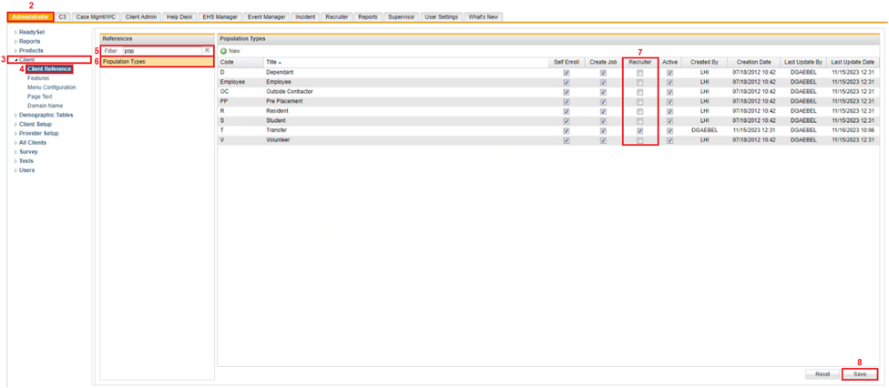

To Enable Population Types
Click the Administrator tab on the horizontal navigation panel.
Click Client on the left navigational panel.
Click Client Reference.
The Reference panel appears.
In the Reference window, in the Filter textbox type in Population Types.
As you type in Population types the list below is filtered to match the values being typed in.
Click Population Types.
The Population Types window displays to the right with a list of Population Types.
In the Population Types window, select the Recruiter checkbox of population types that you want visible to recruiters.
The Pre-Placement population type is hard coded and will always display to recruiters whether the recruiter checkbox is checked.
Click Save.
